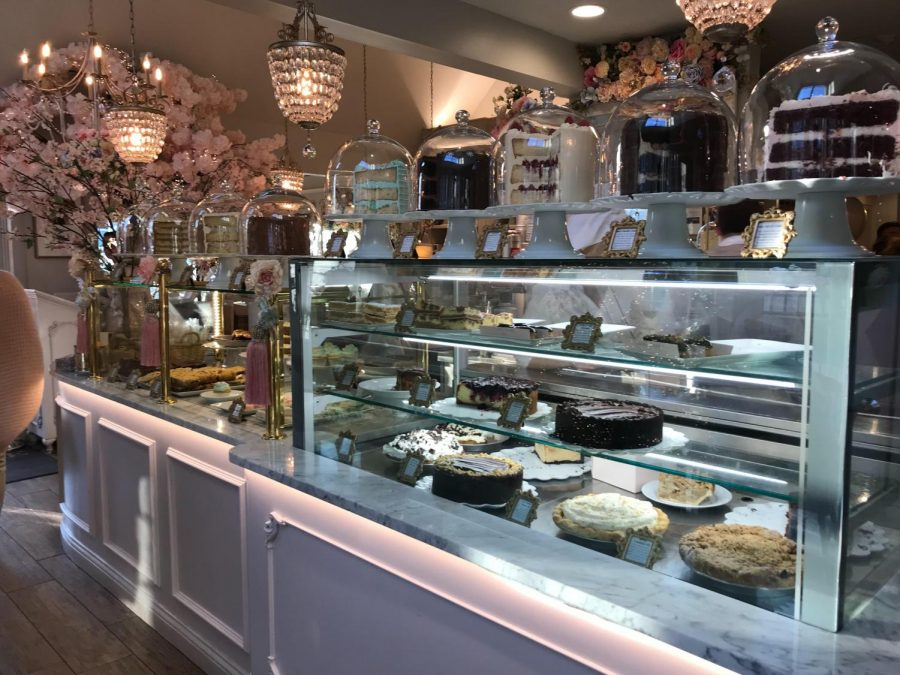

The history of the cake dates back to ancient times. The first cakes were much different from the ones we eat today. They were more like bread sweetened with honey. Nuts and dried fruits were often added. According to food historians, the ancient Egyptians were the first culture to demonstrate advanced cooking skills. The Oxford English Dictionary traces the word "cake" (English for cake) back to the 13th century. It is derived from "kaka", an Old Norse word. Medieval European bakers often made fruit tarts and gingerbread that could last for months without spoiling. According to food historians, the precursors of modern cakes (round cream cakes) were first made in Europe sometime in the mid-17th century. This was mainly due to advances in technology (safer ovens, accessibility of food containers) and the presence of ingredients (refined sugar). At that time, round containers for forming cakes, which were placed in oven boxes, were popular. They could be made of metal, wood or paper. Some were adaptable as needed. The first cream was usually a boiled composition of finer sugar, white dew, and sometimes flavorings. This cream was poured over the cake, then it was returned to the oven for a while. When taken out of the oven, the custard cooled quickly to form a brilliant hard layer. Many cakes of this time still contained dried fruit. Cakes as we know them today didn't hit the scene until the mid-19th century (made with refined white flour, instead of yeast).
The difference between cake, getus (French gateau) and cake "Getu" is the French word for cake. It generally indicates an item made from delicate ingredients, which are best eaten shortly after they are made (gateaux des roi). The cakes last longer, some even get better (fruit cake). "Torte" is the German word for cake, which is similar in composition to getu. Layered and decorated cakes are closer to cheesecakes, except they last a few days.